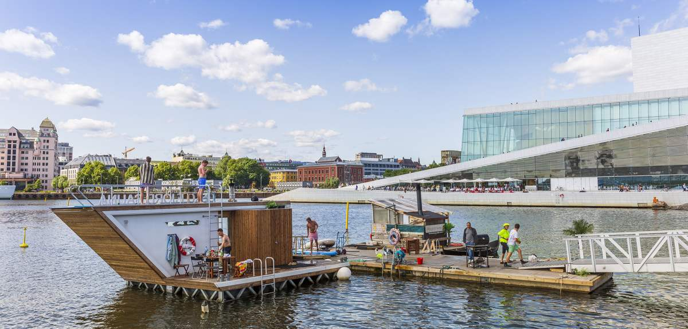
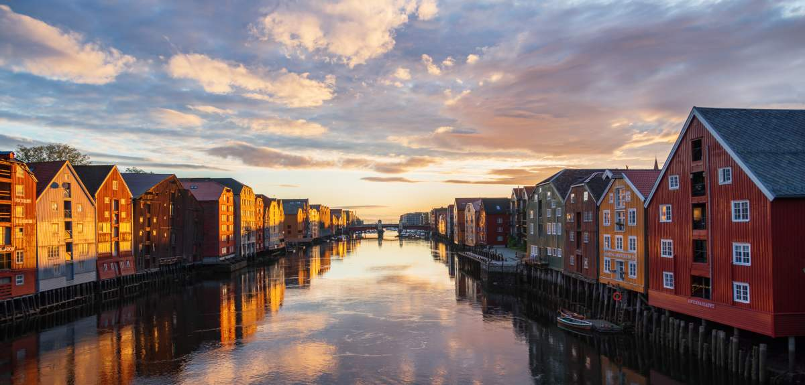
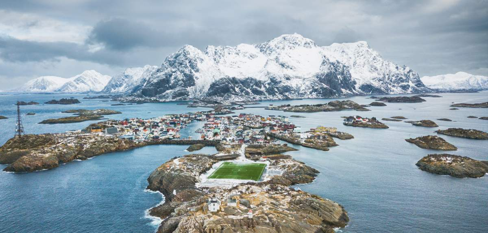

5 лучших мест Норвегии
От модных урбанистических городов до искрящихся фьордов, северного сияния и уединенных деревушек за Полярным кругом – во всю длину вытянулась Норвегия, где на каждом шагу достопримечательности и развлечения.
Итак, откуда начнем? Чтобы вы отдохнули как следует, мы предлагаем вам выбрать для начала один или два региона.
Вот некоторые из самых интересных!
1. Регион Осло
В Осло, названном Зеленой столицей Европы 2019 года, жизнь бьет ключом. Передовые рестораны, модные окраины, переполненный событиями календарь и несколько принципиально новых музеев и достопримечательностей – это лишь небольшая часть того, что вас поджидает. В окрестностях Осло-фьорда и густых лесах вы сможете совмещать городскую жизнь с такими развлечениями на свежем воздухе, как велопрогулки и поездки по островам. В прилегающих губерниях Эстфолд и Вестфолд по побережью рассыпаны очаровательные городки, например, Фредрикстад и Тёнсберг. В часе езды от Осло находится новый художественный центр Норвегии Хаделанд, где вы можете посетить музей Кистефос с эффектным выставочным пространством The Twist
2. Гейрангер-фьорд и Северо-Запад
«Семь сестер» и множество других водопадов, сбегающих с высоких, крутых гор в чистую, прозрачную воду внесенного в Список всемирного наследия ЮНЕСК Гейрангер-фьорда, самого знаменитого фьорда Норвегии. Живописный, выстроенный в югенд-стиле город Олесунд – отличное начало для вашего путешествия по фьордам. Северо-Запад расположен в северной части Региона фьордов, и сюда круглый год съезжаются любители активного отдыха. Столица норвежского альпинизма Ондалснес – прекрасная отправная точка. Этот город окружен высокими горами, и отсюда совсем недалеко до знаменитых достопримечательностей, например, горного серпантина Тролльстиген и Атлантической дороги. Ондалснес – последняя станция железнодорожной линии Раума, поездка по которой считается одним из самых красивых в мире железнодорожных путешествий. Именно на Северо-Западе находятся столица норвежского джаза Moлде и центр вяленой рыбы – Кристиансунд.

3. Архипелаг Шпицберген
Любите природу и хотите перенести любовь к природе на новый уровень? Архипелаг Шпицберген расположен в самом центре Северного Ледовитого океана, на полпути между Норвегией и Северным полюсом. Здесь круглый год можно принять участие в просто невероятных мероприятиях на открытом воздухе, в окружении такой хрупкой и такой суровой природы. Прокатитесь в собачьих упряжках, заберитесь в ледяную пещеру, отправляйтесь в сафари на снегоходах или поохотьтесь за северным сиянием. Население островов составляет почти 3000 человек, зато белых медведей здесь обитает несколько тысяч. Главный город Лонгйир – мини-метрополис, поскольку предлагает отменный выбор услуг и ресторанов, которому могут позавидовать и большие города.

4. Тронхейм и Трёнделаг
Губерния Трёнделаг, расположенная прямо посередине Норвегии, одинаково привлекает и любителей истории, и гурманов, и активных исследователей природы. Порыбачьте, покатайтесь на велосипеде и на лыжах или отправьтесь в поход по одной из девяти паломнических троп пути святого Олафа, которые все ведут к ошеломляющему Нидаросскому собор в Тронхейме. Оживленный студенческий город Тронхейм – столица региона, известная как родина скандинавских вкусов. Побалуйте себя гастрономическими впечатлениями: для этого к вашим услугам как роскошные мишленовские рестораны и модные бары-закусочные, так и уютные кофейни. Насладитесь запахами свежих местных продуктов, путешествуя по живописной Золотой дороге в муниципалитете Иннхерред (Innherred), и совершите путешествие в прошлое, гуляя по включенному в список ЮНЕСКО горнодобывающему городку Рёрус. А в горах Доврефьелля вы сможете полюбоваться удивительными созданиями – овцебыками.
5. Лофотены и Нурланд
Потрясающие вершины, искрящиеся фьорды, аутентичные рыбацкие деревушки и пляжи, как на картинке. Не говоря уже о северном сиянии и полуночном солнце! Возможно, вы уже видели совершенно крышесносные фотографии Лофотенов и Вестеролена в Инстаграме (их полно!). Лучший совет – приезжайте сюда не в летний сезон, а когда схлынет толпа. Более высокий уровень активного отдыха ожидает вас, если вы посетите рай для лыжного и пешего туризма – Нарвик и малоизвестную природную жемчужину побережье Хельгеланда немного к югу. Здесь вы можете проехать по Береговому маршруту между Трёнделагом и Будё – эта дорога признана одной из самых живописных поездок в мире. Оживленный прибрежный городок Будё, самый крупный в губернии Нурланд, предлагает множество развлечений на свежем воздухе, а также богатую культурную жизнь. Кстати, в 2024 году Будё станет Культурной столицей Европы.
